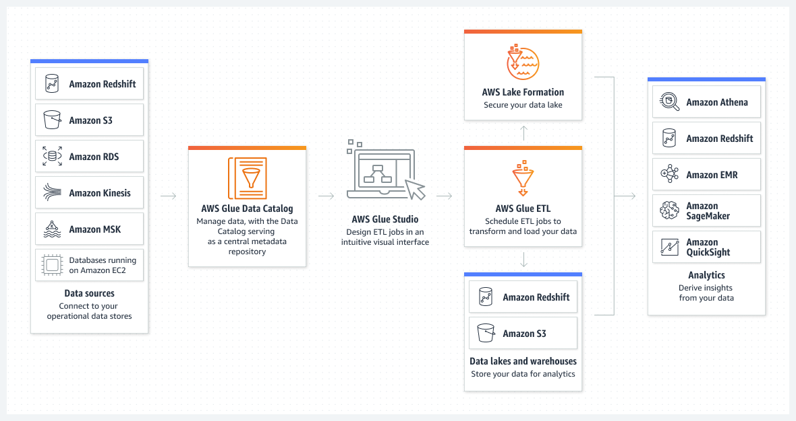

Beschreibung
AWS Glue ist ein vollständig verwalteter Dienst für Extrahieren, Transformieren und Laden (ETL), der Kunden dabei unterstützt, ihre Daten effizient für Analysen vorzubereiten und zu laden. Der Service eignet sich besonders gut für Batch-ETL-Datenverarbeitung, bei der Daten aus verschiedenen Quellen extrahiert, transformiert und in das gewünschte Format für Analysen überführt werden.
Ein wichtiger Aspekt von AWS Glue ist sein serverloser Ansatz, der es ermöglicht, Daten für Analysen vorzubereiten, ohne sich um die zugrunde liegende Infrastruktur kümmern zu müssen. Dies trägt zur Skalierbarkeit und Flexibilität bei. Darüber hinaus ist der Dienst darauf ausgelegt, Daten aus mehreren Quellen zu integrieren, um Analysen, maschinelles Lernen und Anwendungsentwicklung zu unterstützen.
Es ist jedoch wichtig zu beachten, dass AWS Glue nicht für die Erkennung und den Schutz sensibler Daten in AWS konzipiert ist. Sein Hauptzweck liegt vielmehr in der Vorbereitung und Integration von Daten für verschiedene Anwendungen.
Ein weiterer Vorteil von AWS Glue ist die automatisierte Erstellung von ETL-Jobs. Die automatische Generierung von Code reduziert den Aufwand für die Entwicklung und Wartung von ETL-Prozessen erheblich.
Batch-ETL-Datenverarbeitung:
* AWS Glue eignet sich besonders für die Batch-ETL-Datenverarbeitung. Mit Glue-Jobs können Sie Daten aus verschiedenen Quellen extrahieren, transformieren und in das gewünschte Format für Analysen überführen.
Keine Datenerkennung und -schutz:
* Es ist wichtig zu beachten, dass AWS Glue nicht für die Erkennung und den Schutz sensibler Daten in AWS konzipiert ist. Sein Hauptzweck liegt in der Vorbereitung und Integration von Daten.
Serverless-Ansatz:
* AWS Glue nutzt den serverlosen Ansatz, der es ermöglicht, Daten für Analysen vorzubereiten, ohne sich um die zugrunde liegende Infrastruktur kümmern zu müssen. Dies trägt zu Skalierbarkeit und Flexibilität bei.
Mehrfache Datenquellen:
* Der Dienst ist darauf ausgelegt, Daten aus verschiedenen Quellen zu integrieren, um Analysen, maschinelles Lernen und Anwendungsentwicklung zu unterstützen.
Automatisierung von ETL-Jobs:
* AWS Glue bietet eine automatisierte Möglichkeit, ETL-Jobs zu erstellen. Die automatische Generierung von Code reduziert den Aufwand für die Entwicklung und Wartung von ETL-Prozessen.
Insgesamt ermöglicht AWS Glue Kunden, ihre Daten effizient zu organisieren und für unterschiedlichste Anwendungen zu nutzen, sei es für Analysen, maschinelles Lernen oder Anwendungsentwicklung.
Schlüsselwörter
> > > Schlüsselworte bzw. Schlagworte sollen uns dabei helfen, einen Service leichter zu erkennen, wenn es um Prüfungsfragen geht. Ließ dir die Fragen richtig durch und achte auf folgende Schlüsselworte. Sie können dir bei der Beantwortung der Fragen helfen.
- Dateisysteme: Amazon EFS ermöglicht die Erstellung von skalierbaren und elastischen Dateisystemen, die von mehreren EC2-Instanzen gleichzeitig genutzt werden können.
- Network File System (NFS): EFS basiert auf dem NFS-Protokoll und bietet dadurch eine standardisierte und weit verbreitete Schnittstelle für den Dateizugriff.
- Regionale Verwendung: EFS ist in der Lage, in einer AWS-Region über mehrere Verfügbarkeitszonen hinweg bereitzustellen, um Hochverfügbarkeit und Zuverlässigkeit sicherzustellen.
- Elasticity: EFS passt sich automatisch an die Größe der gespeicherten Daten an, ohne dass manuelle Anpassungen erforderlich sind.
- Performance: EFS bietet skalierbare Leistung, die mit der Anzahl der verwendeten Dateisysteme und der Datenmenge skaliert.
- Zugriffskontrolle: AWS Identity and Access Management (IAM) kann verwendet werden, um den Zugriff auf Amazon EFS zu steuern.
- Encryption: EFS bietet die Möglichkeit, Daten im Ruhezustand mit AWS Key Management Service (KMS) zu verschlüsseln.
- Infrequent Access (IA) Storage Class: Die Möglichkeit, Infrequent Access Storage Class zu verwenden, um Kosten für selten genutzte Daten zu reduzieren.
- Lifecycle Management: Automatisches Verwalten der Kosten durch Verwendung von Lifecycle-Managementrichtlinien für Dateisysteme.
- Mount Targets: Konfigurierbare Mount Targets in den Verfügbarkeitszonen, um den Zugriff auf EFS in verschiedenen Zonen zu ermöglichen.
- AWS Backup Integration: Integration mit AWS Backup zur Sicherung und Wiederherstellung von Amazon EFS-Dateisystemen.
- AWS CloudFormation Integration: EFS kann über AWS CloudFormation verwaltet und bereitgestellt werden.
- File Sync: AWS DataSync kann für die schnelle und sichere Übertragung großer Datenmengen zwischen lokalen Speicherorten und Amazon EFS verwendet werden.
Grafische Erklärung
Prüfung Fragen
- Mit welchem AWS Serverless-Service können Sie Daten für Analysen aufbereiten?
- Welche Hauptfunktion erfüllt AWS Glue in der AWS-Umgebung?
- Welche Art von Datenverarbeitung unterstützt AWS Glue hauptsächlich?